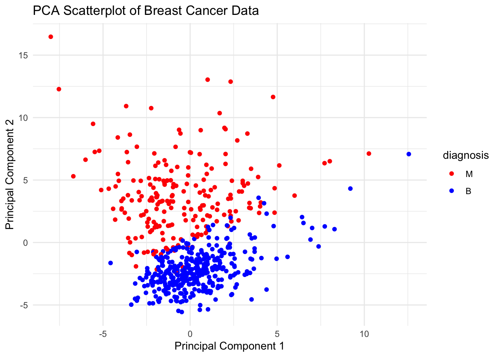
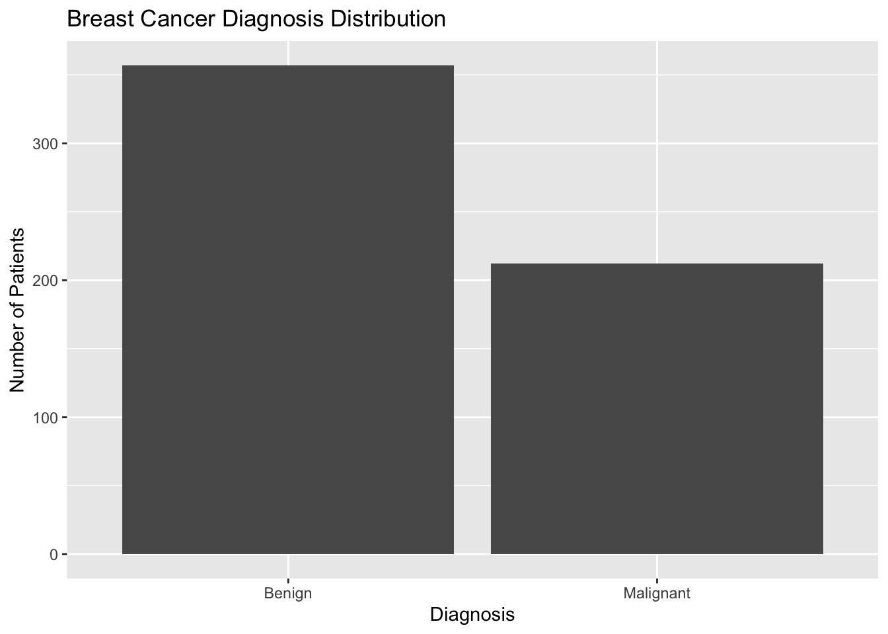

library(tinytex)
library(readr)
library(tidyverse)
library(e1071)
library(caret)
library(NLP)
library(tm)Applications of Anomaly and Outlier Detection
Unveiling the Unusual: A Data Odyssey into Anomaly Detection and Outlier Exploration
Executive summary
As the names suggest, outlier and anomaly detection are methods meant to identify data points that appear to fall outside the normal range. These anomalous observations are often rare and present patterns not present for standard data points. Much like in regular machine learning models, anomaly detection methods fall into 3 main categories; supervised, unsupervised, and semi-supervised models.
Methods of interest
In this vignette, we will demonstrate the efficacy of a number of different models and their consequent ability to identify outliers that may be present in the data.
- Isolation Forests
- Local Outlier Factors
- One class SVM
Data description
The data set in this vignette has been drawn from the Diagnostic Wisconsin Breast Cancer Database and includes a list of 30 features from 569 patients computed from a digitized image of a fine needle aspirate (FNA) of breast mass. The features describe the characteristics of the nuclei present in the image.
Observations in the data set are classified into 2 categories, benign or malignant. In this data set, 357 of the patients received a benign diagnosis, while 212 received a malignant diagnosis.
Procedure
Lightly describe how we cleaned the data and made sure it was ready to be used for our methods below
Isolation Forests
Isolation forests work by…
going through process of implementation…
Local Outlier
Isolation forests work by…
going through process of implementation…
One Class SVM
Libraries
PCA For Visualization
We will use the common algorithm of PCA in order to visualize the separation of the two clusters. We Hope to see that there is indeed a visual difference between the Malignant and Benign class of tumors.
setwd("~/Documents/UCSB/2023-2024/Fall 2023/PSTAT 197/Projects/Final Project/vignette-anomaly-detection")
breast_cancer_data <- read_csv("Data/bc_data_prepared.csv")
# let's first relabe our interest class into 1s and 0s
breast_cancer_data <- breast_cancer_data %>%
mutate(diagnosis = ifelse(diagnosis == 'B', 1, 0))
# Separate predictors and response variable
X <- breast_cancer_data[, -which(names(breast_cancer_data) == "diagnosis")]
y <- breast_cancer_data$diagnosis
# Perform PCA
pca_result <- prcomp(X, scale. = TRUE)
# Extract the first two principal components
pca_data <- as.data.frame(pca_result$x[, 1:2])
pca_data$diagnosis <- factor(y, levels = c(0, 1), labels = c("M", "B"))
# Create a scatter plot using the first two principal components
ggplot(pca_data, aes(x = PC2, y = PC1, color = diagnosis)) +
geom_point() +
scale_color_manual(values = c("red", "blue")) +
labs(title = "PCA Scatterplot of Breast Cancer Data", x = "Principal Component 1", y = "Principal Component 2") +
theme_minimal()
We can clearly see that the two groups should be able to be classified with unsupervised learning methods. Our first method will be one class SVM.
The method of One Class Support Vector Machines tries to find the optimal boundary which separates normal data points from their abnormal counterparts by finding the high dimensional hypersphere which can surround the distribution of high density points. Once we have our trained hypersphere, then points within the hypershere will get classified as 1 or being a “normal data point” while points that are classified as outside the circle will get classified as -1 or as an outlier.
Mathematical Formulation
Remember that our main goal is finding the hypershpere which serparates our data from outliers the best. The algorithm can be formed as an optimization problem making the algorithm something we like to call a turn key algorithm. This means we do not have to play with a lot of parameters to find this boundary. Our goal is to minimize the volume of the hypershpere. This makes intuitive sense as we want to minimize how many outliers actually go within our circle. This results in a binary function function which captures regions in the input space where the probability density of the data lives.
In order to find the smallest hypersphere our goal is to find a sphere with radius r and center c which consists of most data points. We can write this mathematically as
\[ min_{r,c} \text{ } r^2 \\\text{subject to, } \left\| \phi (x_{i}) - c \right\|^2 \le r^2 \\\forall i = 1,2,…,n \]
The above formulation is a little to restrictive, meaning that it is extremely sensitive to outliers. The problem can be then optimized to the form below which is much more flexible.
\[ min_{r,c,\zeta} \text{ } r^2 + \frac{1}{vn} \sum_{i=1}^{n} \zeta_i \\\text{subject to, } \left\|\phi(x_i)-c\right\|^2 \le r^2 + \zeta_i \\\forall i = 1,2,…,n \]
Implementation
We will now begin with the implementation of our One Class SVM. Remember that our outliers are the Malignant Tumors. With the typical SVM model, we define something called a kernel. Basically what is occurring is that we project our data onto an n-dimensional space and find a linear boundary. This boundary will be a soft margin that allows for some slack. We then take our data back to the original dimension where the decision boundary will be non-linear. The above formulation is equivalent when using a Gaussian (radial) kernel. The proof is not included here, but a reference to both papers will be included below. The RBF kernel projects our data onto a higher space using the equation
\[ e^{(-\gamma\left| u-v\right|^2)} \]
Then we optimize to find the optimal margin for a linear boundary. The optimization problem is different than above but note that RBF will result to a equivalent solution. In order to prove this analytically we run a two class SVM on our PCA data to show how we can get a hypersphere with the RBF kernel. Below we train a svm model on our entire training data to see the result of our boundary.
svm_model_PCA <- svm(diagnosis ~ ., data = pca_data,
kernel = 'radial')
plot(svm_model_PCA, pca_data)
We see that the radial basis function is indeed able to seperate the two classes pretty succesfully. The boundary does resemble a ellipsoid shape and in higher dimensions this can certainly be a form of a hypersphere!
Outline
Step 1.) Train our model on the majority class (Benign Tumors)
Step 2.) Predict on the entire training set
Step 3.) Evaluate the process
Training The Model
We will be using the e1071 package to implement the one class SVM kernel.
The following chunk simply creates our variable of interest, diagnosis into a binary column. Then it partitions the data into the majority class and the testing set consisting of the Malignant class. We then build our model with default parameters.
training_data <- breast_cancer_data %>%
filter(diagnosis == 1)
testing_data <- breast_cancer_data %>%
filter(diagnosis == 0)
trainpredictors <- training_data[, -which(names(training_data) =="diagnosis")]
testpredictors <- testing_data[, -which(names(testing_data) == "diagnosis")]
svm.model <- svm(trainpredictors, y = NULL, type = 'one-classification',
nu = 0.10, scale = TRUE, kernel = "radial")
summary(svm.model)
Call:
svm.default(x = trainpredictors, y = NULL, scale = TRUE, type = "one-classification",
kernel = "radial", nu = 0.1)
Parameters:
SVM-Type: one-classification
SVM-Kernel: radial
gamma: 0.03225806
nu: 0.1
Number of Support Vectors: 59
Number of Classes: 1We see that the number of support vectors is 59. These are the vectors that are highly influential with creating our margin of separation.
Run the code below to predict and build confusion matrices. We will also see the accuracy of each training and test set.
svm.predtrain <- predict(svm.model, trainpredictors)
svm.predtest <- predict(svm.model, testpredictors)
confTrain <- table(Predicted = svm.predtrain, Reference =
training_data$diagnosis)
confTest <- table(Predicted = svm.predtest, Reference =
testing_data$diagnosis)
print("Confusion Matrix for Training Set:")[1] "Confusion Matrix for Training Set:"print(confTrain) Reference
Predicted 1
FALSE 38
TRUE 319print("Confusion Matrix for Testing Set:")[1] "Confusion Matrix for Testing Set:"print(confTest) Reference
Predicted 0
FALSE 198
TRUE 14accuracy_train <- sum(svm.predtrain == training_data$diagnosis) / length(training_data$diagnosis) * 100
accuracy_test <- sum(svm.predtest == testing_data$diagnosis) / length(testing_data$diagnosis) * 100
cat("Accuracy on Training Set: ", accuracy_train, "%\n")Accuracy on Training Set: 89.35574 %cat("Accuracy on Testing Set: ", accuracy_test, "%\n")Accuracy on Testing Set: 93.39623 %The results on the testing set turned out to be extremely good. We see that the model was able to classify 94% Percent of the data correctly when we pass in the data of just malignant. We can confirm that our model is verified since it did not just predict that every observation is Malignant. Since there is some error we can be assured that the model was able to capture the distribution of Benign tumors!